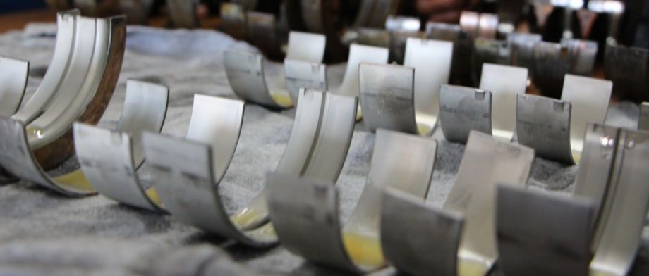
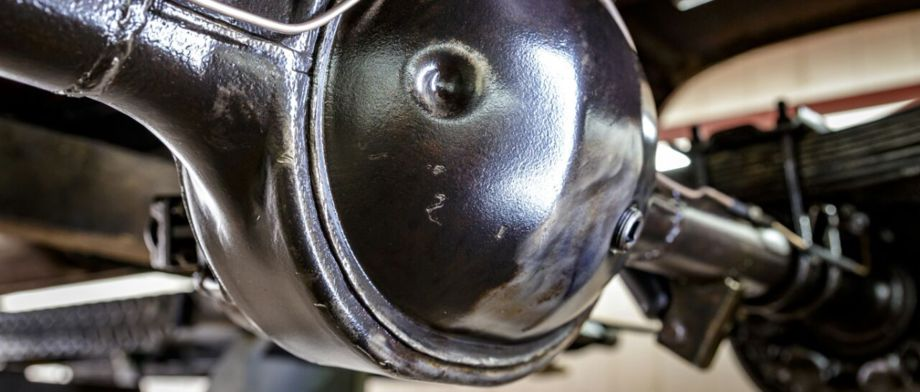

Getriebe, Motoren & Differential
Instandsetzung und Überholung mechanischer Kernkomponenten – auch für seltene und ältere Modelle.
Getriebe
Getriebeinstandsetzung & Automatikgetriebe
Ob Schaltgetriebe oder Automatikgetriebe – wir setzen Getriebe fachgerecht instand, überholen Verschleißteile und sorgen für sauberes Schalt- und Fahrverhalten. Gerade bei älteren und seltenen Fahrzeugen ist Erfahrung mit unterschiedlichsten Getriebebauarten gefragt.
Motoren
Motorinstandsetzung & -überholung
Von der Lagerschale bis zur kompletten Überholung: Wir reparieren und überholen Motoren mit Präzision und Sorgfalt – wichtige Voraussetzung für Laufruhe, Leistung und Langlebigkeit, besonders bei historischen Triebwerken.

Differential & Radlager
Differentialreparatur & Radlagerservice
Undichte Differentiale, verschlissene Radlager oder ungewöhnliche Fahrgeräusche – wir prüfen, reparieren und tauschen Differentiale und Radlager fachgerecht, damit Kraftübertragung und Laufruhe wieder stimmen.

Fragen zu Getriebe, Motor oder Differential?
Schildern Sie uns kurz das Problem – gerne auch telefonisch. Wir sagen Ihnen, was zu tun ist.